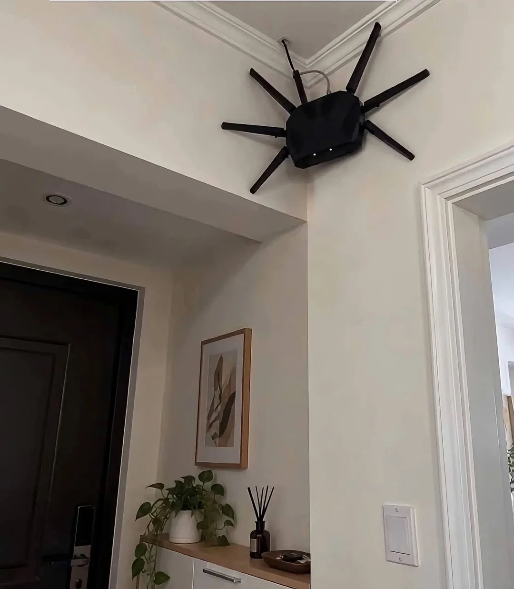

농발거미 에디션

농발거미 에디션
와이어 달아서 위로 아래로 움직이면 100%
악마다이
거니오
두려워말라
느낌있네
처음오는사람은 기절하겠다ㅋㅋ
밤에 반수면상태로 화장실가다 놀라자빠질 자신있음
성능 100점 디자인 100점 유머 100점

AI 짤이야..?
안테나가 양쪽 수가 안맞고, UTP 케이블이 천장에서는 안나오네
무선 신호 증폭용으로 사용 할 수 있지않나?
짤에 천장에서는 안나오는데 단말기에는 꼽혀 있다고 말하는거임
메시인가봐
+ 로 x y z 축으로 안해놔서 불-편
으악!
ㅋㅋㅋ 거미극혐인데 쟨 좀 귀엽네
이게 사이버펑크인가 뭔가 하는거냐
ㅋㅋㅋㅋㅋㅋㅋㅋㅋㅋ잘만들었네ㅋㅋㅋㅋㅋㅋ
ㅅㅂ ㅋㅋㅋ